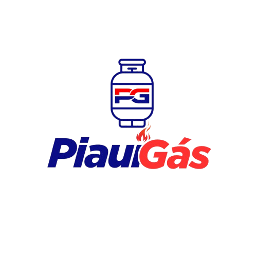

Piauí Gás
Distribuidora
 Peça Gás
Peça Gás
Peça Gás
Peça Gás
A Piauí Gás valoriza a sua privacidade. Este site não coleta, armazena ou compartilha dados pessoais dos visitantes.
O único meio de contato disponível é o link para o WhatsApp, onde o usuário pode iniciar uma conversa diretamente com nossa equipe. Ao clicar no link, o usuário será redirecionado para o site ou aplicativo do WhatsApp, que possui sua própria Política de Privacidade.
Nosso site pode conter links para sites externos que não são operados por nós. Esteja ciente de que não temos controle sobre o conteúdo e práticas desses sites e não podemos aceitar responsabilidade por suas respectivas políticas de privacidade.
Este site não utiliza formulários, cookies personalizados, rastreadores ou qualquer sistema de análise de comportamento do usuário.
O uso continuado de nosso site será considerado como aceitação de nossas práticas em torno de privacidade e informações pessoais. Se você tiver alguma dúvida sobre como lidamos com dados do usuário e informações pessoais, entre em contato conosco.